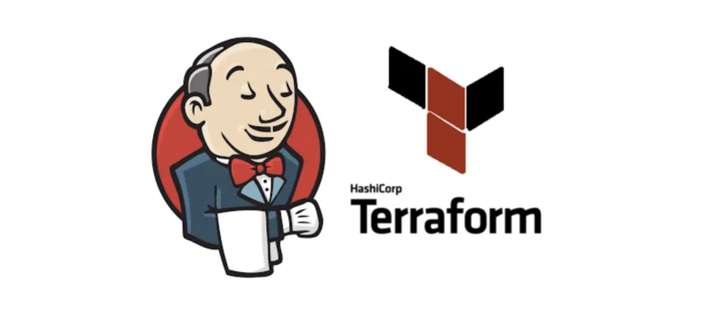
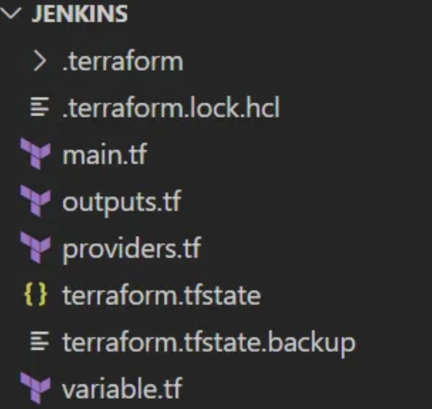
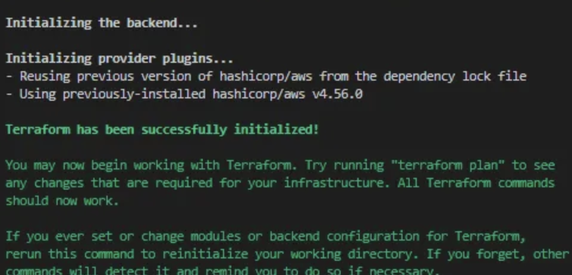
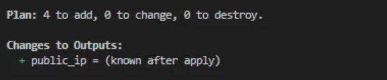
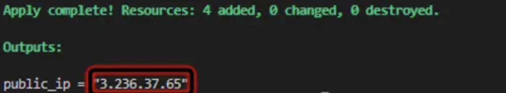
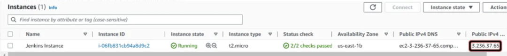
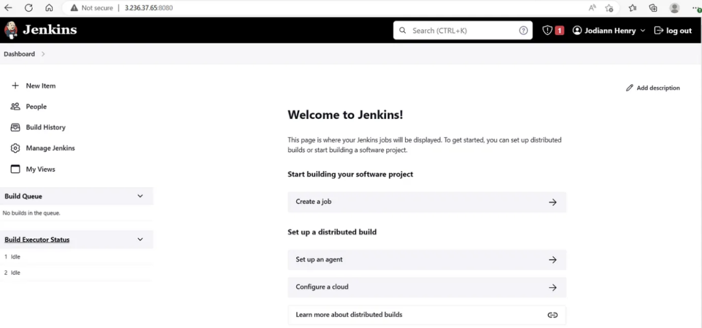
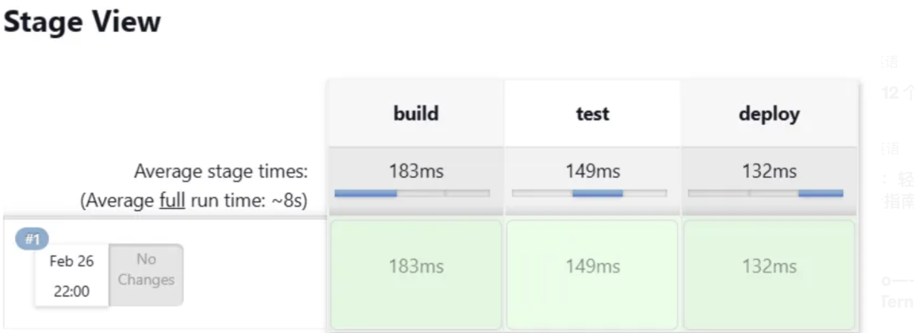

L2 基础设施即代码 - 使用Terraform创建AWS EC2实例并部署Jenkins服务

Terraform 是由 HashiCorp 创建的开源基础设施即代码软件工具。用户使用称为 HashiCorp 配置语言的声明性配置语言（HCL）或可选的 JSON 来定义和提供数据中心基础设施。
您可以使用 Terraform 创建资源，例如 AWS EC2 实例和 AWS S3 存储桶。这些 EC2 实例可以被引导以包含 Jenkins，这是云工程师使用的一种流行的持续集成/持续交付工具。
在此项目中，您将学习如何部署 EC2 实例、引导 EC2 实例以安装和启动 Jenkins、创建 Jenkins 安全组、创建私有 Jenkins S3 存储桶以存储 Jenkins 工件。此外，您还将学习如何创建简单的 Jenkins 管道
先决条件：
您需要安装以下工具：
- AWS CLI 安装和配置
- Terraform 安装和配置
- IDE（我使用 VS Code）
工程初始化
在您选择的 IDE 中，创建一个新文件夹，然后cd进入该文件夹。
创建 main.tf、variable.tf、providers.tf 和 outputs.tf 文件

main.tf 将包含主要的配置。
resource "aws_instance" "instance" {
ami = var.ami
instance_type = var.instance
user_data = var.ec2_user_data
vpc_security_group_ids = [aws_security_group.security_group.id]
tags = {
Name = "Jenkins Instance"
}
}
resource "aws_security_group" "security_group" {
vpc_id = var.vpc
ingress {
description = "Allow SSH from my Public IP"
from_port = 22
to_port = 22
protocol = "tcp"
cidr_blocks = ["-.-.-.-/32"]
}
ingress {
description = "Allows Access to the Jenkins Server"
from_port = 8080
to_port = 8080
protocol = "tcp"
cidr_blocks = ["0.0.0.0/0"]
}
ingress {
description = "Allows Access to the Jenkins Server"
from_port = 443
to_port = 443
protocol = "tcp"
cidr_blocks = ["0.0.0.0/0"]
}
egress {
from_port = 0
to_port = 0
protocol = "-1"
cidr_blocks = ["0.0.0.0/0"]
}
tags = {
Name = "Jenkins Security Group"
}
}
resource "aws_s3_bucket" "jojenkinsbucket" {
bucket = "jojenkinsbucket"
}
resource "aws_s3_bucket_acl" "jenkinsbucketacl" {
bucket = aws_s3_bucket.jojenkinsbucket.id
acl = "private"
}
variable.tf 包含变量定义
variable "vpc" {
description = "The Default VPC of EC2"
type = string
default = "vpc-0be40a17d234455e3"
}
variable "ami" {
description = "The AMI ID of the Instance"
type = string
default = "ami-0dfcb1ef8550277af"
}
variable "instance" {
description = "The Instance Type of EC2"
type = string
default = "t2.micro"
}
variable "ec2_user_data" {
description = "User Data for Jenkins EC2"
type = string
default = <<-EOF
#!/bin/bash
sudo yum update -y
sudo wget -O /etc/yum.repos.d/jenkins.repo https://pkg.jenkins.io/redhat-stable/jenkins.repo
sudo rpm --import https://pkg.jenkins.io/redhat-stable/jenkins.io.key
sudo yum upgrade
sudo amazon-linux-extras install java-openjdk11 -y
sudo yum install -y jenkins
sudo systemctl enable jenkins
sudo systemctl start jenkins
EOF
}
providers.tf 定义云供应商配置
provider "aws" {
region = "us-east-1"
}
terraform {
required_providers {
aws = {
source = "hashicorp/aws"
version = "~> 4.0"
}
}
}
outputs.tf代码发布后的输出
output "public_ip" {
value = aws_instance.instance.public_ip
}
基础设施发布
terraform init命令将初始化包含 Terraform 配置文件的工作目录并安装任何所需的插件。

terraform validate命令验证目录中的配置文件。
terraform plan命令可让您预览 Terraform 为修改您的基础架构而采取的操作。

terraform apply命令执行 Terraform 计划中建议的操作以创建、更新或销毁基础设施。

此时您可以通过检查控制台来确认 EC2 实例的创建。

测试Jenkins
Jenkins Pipeline 是一套插件，支持在 Jenkins 中实施和集成持续交付管道。
要创建 Jenkins 管道，请在 Web 浏览器中输入“EC2实例的公共IP:8080” 。配置并登录Jenkins后，您应该会看到类似于下图的截图。

单击新项目。
- 输入项目的名称。
- 选择Pipeline，然后选择Ok。

在管道部分，输入以下脚本：
pipeline {
agent any
stages {
stage("build") {
steps {
echo 'Building the application...'
}
}
stage("test") {
steps {
echo 'Testing the application...'
}
}
stage("deploy") {
steps {
echo 'Deploying the application...'
}
}
}
}
选择Jenkins 仪表板左侧的“立即构建” 。如果您看到绿色的视图，则表示构建已成功完成。

销毁资源
如果自己做实验切记删除资源，否则会造成账单消耗。使用terraform destroy销毁资源。